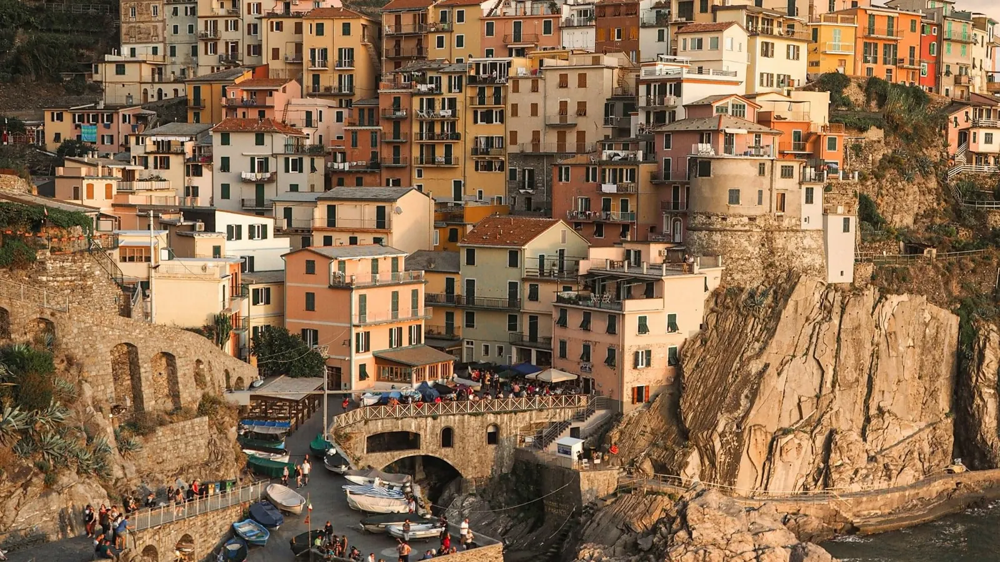

The short answer
The five villages — Monterosso, Vernazza, Corniglia, Manarola and Riomaggiore — sit on one regional railway line between Levanto and La Spezia. Trains are frequent and the hops between villages take only a few minutes. Don't drive: parking is scarce and the roads are narrow.
How the Cinque Terre train line works
- Base yourself in La Spezia (south, more hotels, good fast trains from Pisa, Florence and Rome) or Levanto (north, quieter, trains from Genoa).
- Take the regional trains in either direction and get off where you want. The dedicated "Cinque Terre Express" shuttle runs in season.
- Corniglia station is below the village: about 380 steps or a small shuttle bus up the hill.
The Cinque Terre Treno Card (2026)
The card gives unlimited 2nd-class travel on regional trains between Levanto and La Spezia, plus access to the paid trails, village buses and station restrooms. Prices change with demand (low, medium and high days).
| Treno Card | Low days | Medium days | High days |
|---|---|---|---|
| Adult, 1 day | €22.00 | €29.50 | €35.00 |
| Adult, 2 days | €36.50 | €51.00 | €61.00 |
| Adult, 3 days | €49.00 | €68.00 | €81.00 |
| Child 4–11, 1 day | €15.00 | €20.00 | €23.50 |
| Family, 1 day (2 adults + children) | €56.50 | €77.00 | €91.50 |
Only hiking, not taking the train? The cheaper Trekking Card (from €10 a day for adults) covers the paid trails and village buses only.
Card or single tickets?
- Visiting 3 or more villages in a day and walking a paid trail: the Treno Card usually wins.
- Only 1–2 villages, or off season: single tickets are often cheaper. In season the single ticket between Cinque Terre stations has a special higher price, so compare before buying.
- Always validate paper tickets before boarding — read our guide to validating train tickets in Italy.
The trails
The famous coastal path (Sentiero Azzurro) links the villages; the paid sections need a Trekking or Treno Card. Sections can close after heavy rain or for maintenance, and some have limited access in peak periods — check the Cinque Terre National Park website on the morning of your hike. Wear proper shoes: inspections fine visitors in flip-flops.
Tips to avoid the crowds
- Start early (before 9:00) or late afternoon; cruise and coach groups peak in the middle of the day.
- Visit in spring or autumn, and avoid the busiest weekends and holidays.
- Sleep in a village or in Levanto for quiet evenings when the day trippers have left.
- Check for train strikes before you go — read Italy train strikes: what to do.
Ready to book?
Affiliate links: if you book, 687 may earn a commission at no extra cost to you.
Five villages, one smooth day.
In 687 Italy each stage of your trip has Check trains and Navigate ready for that day, and when a strike, a delay or bad weather hits, NOW rebuilds the rest of your day around what is fixed — so you still see the villages that matter to you.